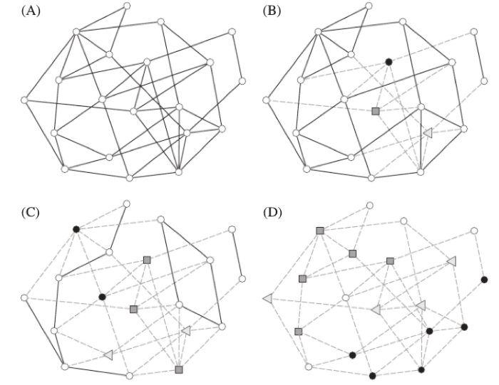

Network Interdiction
Network interdiction has been an ongoing research endeavor for many years. Despite having their root in military applications, these models have recently gained traction in many other areas thanks to their ability of informing decision makers about vulnerabilities on infrastructure and/or operational networks. Therefore, it is common to find graph interdiction applications in areas as diverse as homeland, evacuation planning, immunization strategies, energy systems, communications and transportation, among others.
Representative Publications
Critical Elements Detection
Along with network interdiction, another similar area that has gained some traction lately deals with a specific type of problems often called critical elements detection problems that study vulnerabilities of graphs with respect to connectivity and cohesiveness properties, such as the number of connected vertex pairs, the size of the largest connected component, and the number of connected components. Applications of these problems are often used to find vulnerable elements in communication networks, or in social network analysis to identify key players to propagate ideas like advertising campaigns over social networks. Network interdiction and critical element detection have been two of the main research areas of GAMMA.
